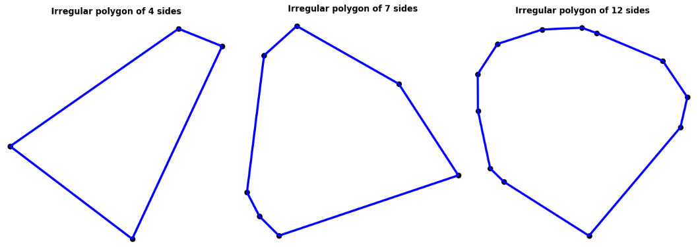
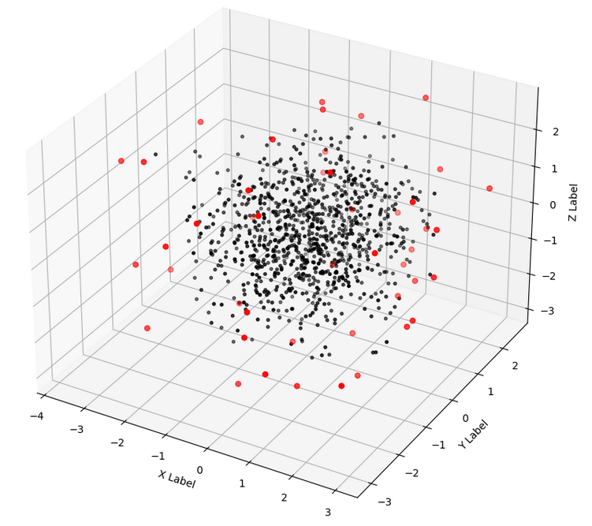

Construction and Motivation
One easy way to visualize the convex hull of a set of planar datapoints is - as the shape formed by the datapoints by drawing lines that connect every single pair of them, and then removing all the inner lines such that only the outermost boundary remains.
The convex hull is also the polygon\(^1\)
Polygon
A polygon is a closed, convex shape in 2 dimensions.

formed by a tautly wound spool of thread wrapped around a collection of datapoints with thumbtacks stuck over them on a piece of cardboard. This way of visualizing makes the following assumptions most readers of this post are very likely to have unconciously already made:
- That there is an infinite amount of thread available, and as a result of which…
- The distance between any two points the thread connects to form an edge, could potentially be infinite.
This thread and thumbtack example is further advantageous since it makes it explicitly clear why a shape so constructed would be convex\(^2\). Beginning at, say for
Convexity
The property of a (closed) shape or (open) geometric function such that line segments connecting any two points on or inside the shape, also lies completely on or inside it. This property can be extended to any number of dimensions!
example the highest datapoint among all the thumbtacks, and wrapping the thread counterclockwise around the collection of points will always pick for the next vertex of the polygon, some point which will have a height (the y coordinate) obviously smaller than the previous. This is of course only true since we have assumed infinite available thread.
Most algorithmic problems like the construction of the convex hull are motivated by their necessity for a targeted application, and in my case it was a precursor to the construction of an alpha shape\(^3\) for a collection of planar datapoints (my post on
Alpha Shape
The alpha shape is a generalization of the convex hull when the amount of unspooled thread available to us at every new vertex thumbtack is a certain, possibly small and finite function of a quantity \(\alpha\). This results in a possibly concave envelope around a set of points, and the convex hull itself when the function of \(\alpha\) tends to \(\infty\).
which you can find here), which in turn was a necessary part of my ongoing research project on safe online learning of control barrier functions (my post on which you can find here.
Tldr; I used the exercise of writing my own convex hull algorithm as a warm up before tackling the alpha shape problem to perform a boundary detection on a 2D point cloud\(^4\).
Point Cloud
A collection of data points in three dimensions commonly obtained from LiDAR scans.

The home made Gift-Wrapping algorithm
highest_pt = self.data[list(self.data[:,1]).index(np.max(self.data[:,1])), :]
# Append this first highest pt to the list of points in the convex hull
self.hull_pts.append(highest_pt)
next_highest = highest_pt
count = 0
# cumulative rotation angle of the whole figure!
cumulative_theta = 0
# Create a mask for the non hull points and update it to not include the
# ... highest point
not_hull_mask = (np.ones(len(self.data)) == 1)
not_hull_mask *= ((self.data[:,0] != highest_pt[0]) //
+ (self.data[:,1] != highest_pt[1]))
# Initial rotation matrix is initialized to the identity matrix!
R = np.array([[1, 0],
[0, 1]])For my first attempt, with no prior research into the different algorithms designed for efficient convex hull computation, I came up with the algorithm presented in pseudo-code below, which happened to be a variant of the gift-wrapping algorithm:
# take N number of points of form (x,y) as input
# find the highest point
# rotate all points by a small angle counterclockwise
# is the new highest point still == same highest point from step 2. ?
# repeat steps 2. to 4. until a new highest point is found
# inverse rotate this highest point which lies on the hull and store it
# repeat steps 2. to 6. until the next highest point == first highest point.In words, what this algorithm 1 was going to do was slowly rotate the whole dataset of points by a small angle at a time until a new highest point was obtained and to repeat the process until we came back to the very first point. Sort of like wrapping a gift by rotating the gift box and draping the required length of wrap over the next side to cover; the whole process viewed cross-sectionally, of course since we are considering a 2D algorithm.
Here’s the function that does it:
while cumulative_theta < 2*np.pi:
count = 0
val = False
while val == False:
# 1. Rotate points by a fixed amount
rotated_pts = self.data @ R
# 2. New max Y value
maxY = np.max(rotated_pts[:,1])
# 3. Calculate new highest point using this highest Y coordinate value
next_highest = rotated_pts[list(rotated_pts[:,1]).index(maxY), :]
# 4. Inverse rotate the highest point to check if it is still equivalent
# ... to the unrotated highest pt
R_inv = np.array([[np.cos(cum_theta+count*self.delta),
-np.sin(cum_theta+count*self.delta)],
[np.sin(cum_theta+count*self.delta),
np.cos(cum_theta+count*self.delta)]])
next_highest = next_highest @ R_inv
# 5. Increase the argument of the R matrix by one more self.del
# ... increment and try again
count += 1
R = np.array([[ np.cos(cum_theta+count*self.delta),
np.sin(cum_theta+count*self.delta)],
[-np.sin(cum_theta+count*self.delta),
np.cos(cum_theta+count*self.delta)]])
# 6. Comparing next_highest and the highest_pt
n_h = np.array([round(next_highest[0], 5), round(next_highest[1], 5)])
h_p = np.array([round(highest_pt[0], 5), round(highest_pt[1], 5)])
diff = n_h - h_p
val = diff.any()
# Having exited the while loop, we update the cumulative angle of rotation
cumulative_theta += count*self.delta
# 8. Append the next pt to the list of hull_pts
highest_pt = next_highest
if ((abs(highest_pt[0]-self.hull_pts[0][0])<10**(-8)) and
(abs(highest_pt[1]-self.hull_pts[0][1])<10**(-8))):
break
else:
self.hull_pts.append(highest_pt)
# 9. Updating the not_hull_mask! {if the difference is really really small}
mask1 = (abs(self.data[:,0]-next_highest[0]) > 10**(-10))
mask2 = (abs(self.data[:,1]-next_highest[1]) > 10**(-10))
not_hull_mask = not_hull_mask * (mask1 + mask2)
self.N = len(self.data)
self.not_hull = [self.data[i] for i in range(self.N) if not_hull_mask[i] == True]Improvements to the home made algorithm
After the success of coding up the gift wrapping algorithm and finding out that it was not a novel idea, I decided to fine tune my own algorithm to make it more efficient (in terms of computational complexity) before I moved on to trying a different algorithm or even just a toolbox. Some obvious conclusions I came to while ruminating over improving the algorithm were that
\(\Delta \theta\)
The small icremental angle of rotation.
the most inefficient part of the algorithm was computing the new highest point after every small \(\Delta \theta^5\) increment which results in O(nh)\(^6\) complexity. O(nh)
Time complexity (in linear time) as a product of “n” - the number of data points through which the built in max function has to look to compute the highest, and “h”, the number of iterations, i.e \(2 \pi / \Delta \theta\).another way to improve efficiency could be to either increase \(\Delta \theta\) (i.e decrease “h” \(^6\)) or to substitute the highest point computation with a pre-computed metric with which to compute the next vertex point instead of rotating by \(\Delta \theta\) increments to do so
also, lifting\(^7\) the data points into a higher dimension and analysing them Parabolic Lifting
Using for example, a function like \(x^2 + y^2\) and assigning the resultant value for every data point \((x,y)\) a third “z” dimension, allowing analysis of the data set in \(\mathbb{R}^3\); the afforementioned technique is called a parabolic lift. for potential metrics seemed promising, although their universality and the nature of the lift (and its usefulness!) were yet to be determined
Popular approaches
There are a number of different algorithms that efficiently compute the 2D convex hull for a set of data points, some of which are listed below:
1. Quick Hull
Very similar to Quick Sorting\(^7\) which takes a divide and conquer approach,
Quick Sort
A popular algorithm used to sort a list of numbers in increasing order by comparing numbers on either side of a “pivot” element (usually in the middle of the unsorted array). A popular tweaking implements the quick sort algorithm recursively over increasingly smaller halves on either side of the pivots.
this algorithm computes half hulls over recursively smaller half-sets until all the points in the hull have been correctly identified2. The process is illustrated in Figures 1, 2, 3 and 4 below:
First, the highest and lowest points are identified as shown in Fig. 1 and are added to the list of Hull points.
Then, the whole dataset is rotated such that the connecting line between the highest and lowest points becomes horizontal (this is done to so that the visual understanding of following steps becomes easier):
After rotating the points, we then consider only the points “above” the new horizontal connecting line and calculate the new highest point (in yellow on the left in Fig. 3, then repeating the process to compute the new lowest point, in the right plot. Both these points are also added to the list of Hull points and the process continues.
In a similar vein, we use the line connecting the right horizontal point (in pink) and the previous highest (in yellow) to calculate a new relative highest among those points that lie “above” here, shown in Fig. 4 in the same orientation as the previous figure for reference
The process continues until the new relative highest point yields points already in the list of hull points. This divide and conquer approach which divide points as being on the right, the left or inside a triangle of points at any iteration has an \(O(n \hspace{0.2cm} log \hspace{0.075cm} n)\) complexity and is relatively easy to code up.
2. Graham’s Scan
How does this help with the Alpha shape?
My aim for the Safe Online Learning project was to be able to efficiently compute the alpha shapes of obstacles
as a replacement for a kdtree based boundary point detection algorithm
kdtree based techniques
Short for \(k\)-dimensional trees, they are a space partitioning technique most commonly used for nearest neighbor searching for data that lives in higher dimensional space; Python’s Numpy library has built in data structure of the kdtree type to aid with this.
. And as I describe in detail in my post on the ALpha Shape, the alpha complex reaches its limit and stagnates when the radius of the neighborhood around a data point looking to connect with its neighbors gets infinitely large, the outer most boundary of the dataset will simply be its convex hull! And so, the convex hull is mathematically a specific case of the alpha complex and thus the alpha shape, and also an easier way to understand the workings of this class of geometrically driven algorithm involving nearest neighbor considerations in n-dimensional space, and thus this post was made…
Future scope
A combination of the Graham’s scan algorithm and a variant of the gift wrapping algorithm called Chan’s algorithm has the fastest time complexity on average for 2 and 3 dimensional datasets and I look forward to implementing it sometime, but until then I will try and work on improvements for my home made algorithm to compare it with previous versions of itself, in terms of time clocked and memory consumed.
To be continued…